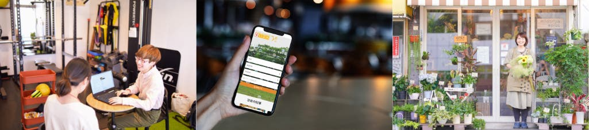

CORE SERVICE / 中核サービス
地域事業者の経営を、
まいぷれとAIで支える。
情報発信や集客を支える月額型サービスと、地域の担当者による継続的な支援を組み合わせます。日々の業務で役立つ価値を高め、使い続けていただくことを、継続収益の成長につなげます。
FLNは、地域情報プラットフォーム「まいぷれ」を基盤に、お店や企業の情報発信と日々の経営を支えています。地域との継続的な接点に、共通のサービス基盤とAIを組み合わせることが、私たちの事業の中心です。
お店の声を聞き、支援に活かし、使われ方を確かめて改善する。地域で磨いたサービスを全国の運営パートナーや協業先へ広げ、継続的に役立つ価値と収益の両方を育てます。
PLATFORM / 事業基盤
地域との継続的な接点を通じて、情報を集め、更新し、支援に活かす仕組み。
CORE SERVICE / 中核サービス
情報発信や集客を支える月額型サービスと、地域の担当者による継続的な支援を組み合わせます。日々の業務で役立つ価値を高め、使い続けていただくことを、継続収益の成長につなげます。
REVENUE MODEL / 継続収益の仕組み
2つの提供経路が、FLNの継続収益をつくります。

FLNは、直営地域で地域事業者を直接支援するとともに、全国の運営パートナーへサービス基盤と運営ノウハウを提供しています。
直営地域の月額利用料と、パートナー経由の固定ランニング費用・レベニューシェア。この2つの経路で継続収益を積み上げ、地域事業者への支援を広げています。
運営パートナー経由の収益の仕組み：まいぷれ運営パートナー募集サイト。費用・レベニューシェアの条件は契約により異なります。
HOW WE SCALE / 広がる仕組み
サービス・AI・システムの開発
ブランドづくり・運営支援
地域のまいぷれを運営
営業・取材・情報発信・活用支援
お店の魅力を届ける
地域の情報を暮らしに活かす
地域を知る企業が、その地域のまいぷれを運営します。FLNは仕組みを磨き、運営パートナーは地域との関係を育てる。この分業によって、一つの地域で磨いたサービスを、次の地域へ広げていきます。
運営パートナー138社・契約エリア893市区町村（2026年5月末）。決算説明資料
店主の想い、商品やサービスの特徴、日々の困りごと。地域との対話で捉えた情報や文脈を、私たちは「ローカルナレッジ」と考えています。取材や支援を重ね、その理解を深めていきます。
01 / RELATIONSHIPS
店舗や事業者との継続的な対話から、商品へのこだわりや日々の困りごとを捉えます。
02 / LOCAL OPERATIONS
地域に根ざした担当者が取材や日々の支援を重ね、変化するお店の情報を発信につなげます。
03 / SHARED PLATFORM
FLNがサービスや運営ノウハウを磨き、全国の運営パートナーと共有。地域での実践を次の支援に活かします。
お店の特徴・想い・課題を知る
取材や対話を、伝わる言葉と写真に
地域の担当者とAIが、日々の実行を支援
反応や新しい相談を、次の支援へ
日々の支援が新しい対話を生み、情報とサービスを育て続ける。
まいぷれ × AI × SaaS
まいぷれを基盤として、地域のお店や企業の魅力を伝え、集客につなげます。AIエージェント「まいぷれくん」や、まるまるおまかせプランなどを組み合わせ、日々の情報発信から経営を支援します。

詳しく見る地域にAIを実装する
地域情報とAIを組み合わせ、地域の中小企業・自治体の業務を支援。「まいぷれくん」で培った技術・ノウハウを、自社ブランドでのOEMや専用AIエージェントへ展開します。
詳しく見る地域企業とともに全国へ
地域の企業が「まいぷれ」の運営パートナーとなり、事業者や自治体に直接向き合います。FLNは商品開発、AI・システム、マーケティング、事業モデルと運営支援を担います。
官民協働で地域課題を解決する
地域プラットフォームと全国のネットワークを活かし、自治体と地域課題に向き合います。仕組みの導入から現場での運営まで伴走し、地域で使われ続けるサービスをつくります。
この事業について相談する地域と人との新しい関係をつくる
地域の商品を買う。地域の仕事に関わる。地域の人と交流する。Nativ.media、地域おこし協力隊支援、まちスパチャ、シティプロモーションなど、多様な接点を通じて関係人口を生み出します。
この事業について相談する成長の中心は、地域事業者を継続的に支える月額型サービスです。提供価値と使いやすさを磨き、利用店舗の拡大、サービス利用の広がり、継続利用につなげていきます。
01 / REACH
直営・運営パートナーによる提案に加え、OEMで協業先の顧客基盤へサービスを届けます。
02 / VALUE
情報発信、AIによる作業支援、運用代行などを、お店の課題に合わせて組み合わせます。
03 / CONTINUITY
地域の担当者による活用支援とサービス改善を重ね、日々の仕事に定着することを目指します。
共通システムやAIの活用、運営ノウハウの共有により、文章づくりや運用の負担を減らし、地域の担当者がお店との対話や提案に力を注げる体制を目指します。
サービスは直営・運営パートナー・OEMを通じて提供。海外では、日本で磨いたシステムと店舗支援のノウハウを活かし、現地の情報と関係づくりを重ねます。
ふるさと納税支援は、2026年10月1日に事業を承継した株式会社フューチャーリンクローカルサポートが担います。グループの専門性を活かし、自治体と地域事業者を支えます。
グループの事業構成